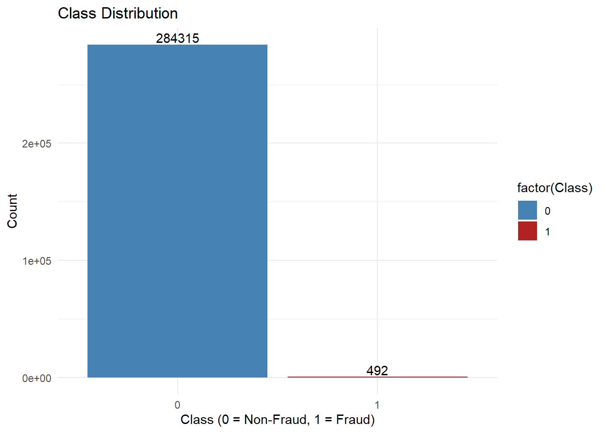
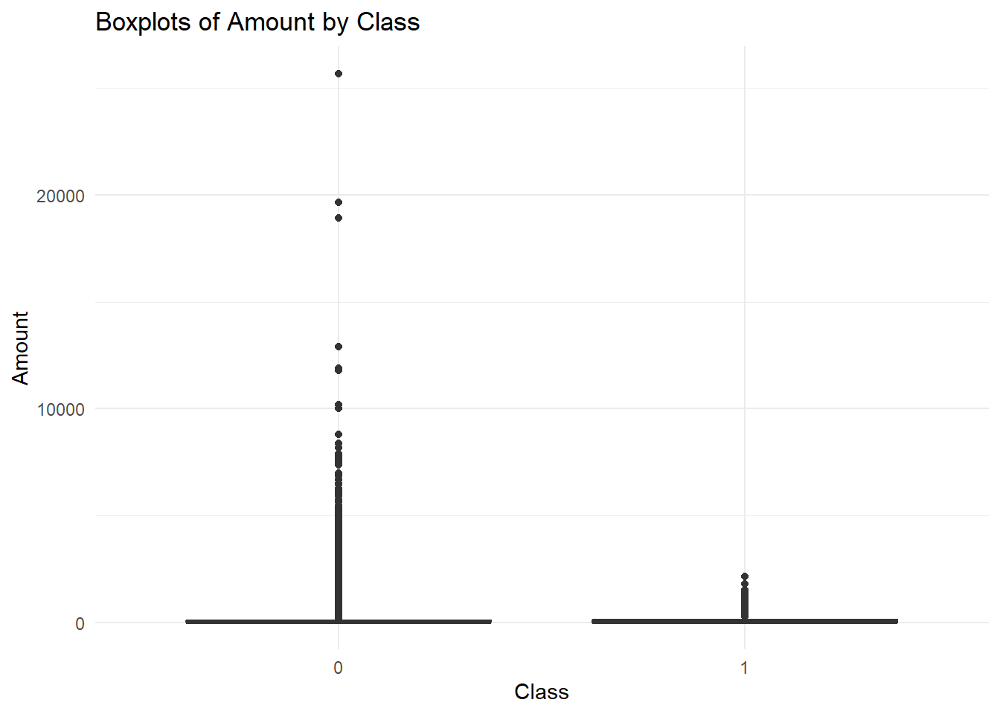
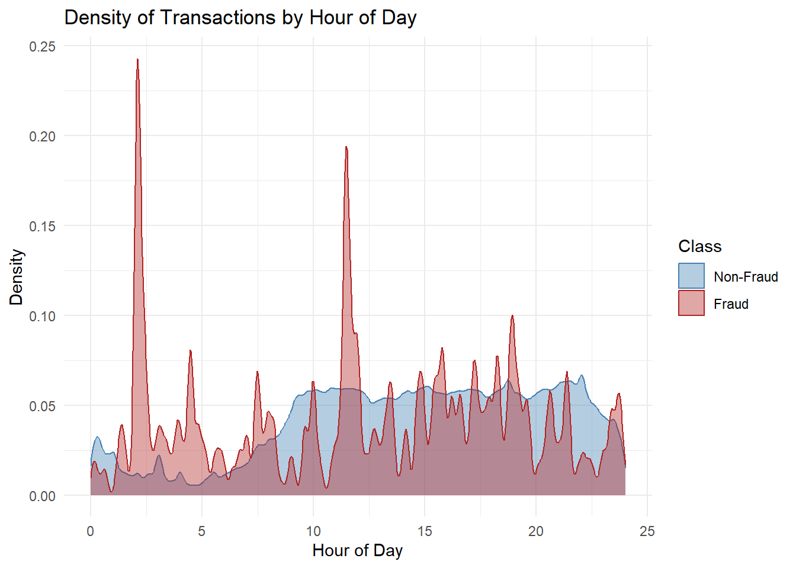
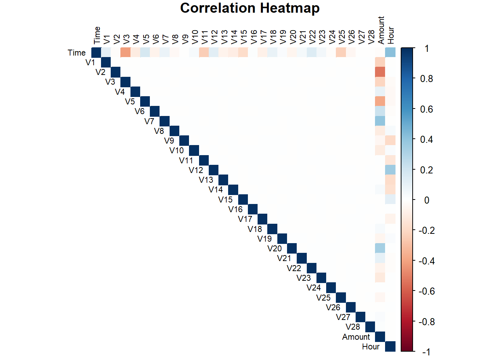
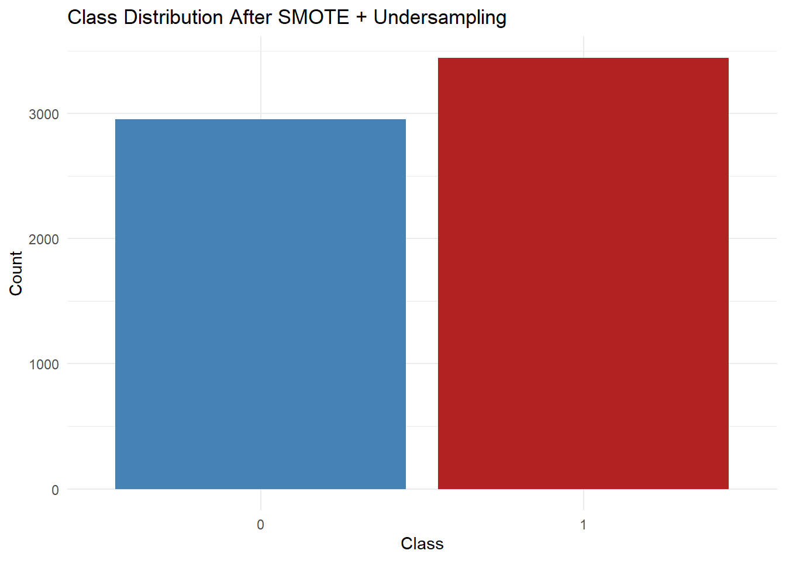

# Load packagessuppressPackageStartupMessages({library(tidyverse)library(skimr)library(reshape2)library(corrplot)library(scales) # for nice axis labelslibrary(caret)library(MASS)library(car)library(h2o)# install.packages("remotes")# remotes::install_github("cran/DMwR")# Load DMwR and convert target to factorlibrary(DMwR)})
Warning: package 'dplyr' was built under R version 4.4.3
Warning: package 'skimr' was built under R version 4.4.2
Warning: package 'reshape2' was built under R version 4.4.3
Warning: package 'corrplot' was built under R version 4.4.2
Warning: package 'caret' was built under R version 4.4.3
Warning: package 'car' was built under R version 4.4.2
Warning: package 'carData' was built under R version 4.4.2
Warning: package 'h2o' was built under R version 4.4.3
# Read the datasetdf <-read.csv("creditcard.csv")summary(df)
Time V1 V2 V3
Min. : 0 Min. :-56.40751 Min. :-72.71573 Min. :-48.3256
1st Qu.: 54202 1st Qu.: -0.92037 1st Qu.: -0.59855 1st Qu.: -0.8904
Median : 84692 Median : 0.01811 Median : 0.06549 Median : 0.1799
Mean : 94814 Mean : 0.00000 Mean : 0.00000 Mean : 0.0000
3rd Qu.:139321 3rd Qu.: 1.31564 3rd Qu.: 0.80372 3rd Qu.: 1.0272
Max. :172792 Max. : 2.45493 Max. : 22.05773 Max. : 9.3826
V4 V5 V6 V7
Min. :-5.68317 Min. :-113.74331 Min. :-26.1605 Min. :-43.5572
1st Qu.:-0.84864 1st Qu.: -0.69160 1st Qu.: -0.7683 1st Qu.: -0.5541
Median :-0.01985 Median : -0.05434 Median : -0.2742 Median : 0.0401
Mean : 0.00000 Mean : 0.00000 Mean : 0.0000 Mean : 0.0000
3rd Qu.: 0.74334 3rd Qu.: 0.61193 3rd Qu.: 0.3986 3rd Qu.: 0.5704
Max. :16.87534 Max. : 34.80167 Max. : 73.3016 Max. :120.5895
V8 V9 V10 V11
Min. :-73.21672 Min. :-13.43407 Min. :-24.58826 Min. :-4.79747
1st Qu.: -0.20863 1st Qu.: -0.64310 1st Qu.: -0.53543 1st Qu.:-0.76249
Median : 0.02236 Median : -0.05143 Median : -0.09292 Median :-0.03276
Mean : 0.00000 Mean : 0.00000 Mean : 0.00000 Mean : 0.00000
3rd Qu.: 0.32735 3rd Qu.: 0.59714 3rd Qu.: 0.45392 3rd Qu.: 0.73959
Max. : 20.00721 Max. : 15.59500 Max. : 23.74514 Max. :12.01891
V12 V13 V14 V15
Min. :-18.6837 Min. :-5.79188 Min. :-19.2143 Min. :-4.49894
1st Qu.: -0.4056 1st Qu.:-0.64854 1st Qu.: -0.4256 1st Qu.:-0.58288
Median : 0.1400 Median :-0.01357 Median : 0.0506 Median : 0.04807
Mean : 0.0000 Mean : 0.00000 Mean : 0.0000 Mean : 0.00000
3rd Qu.: 0.6182 3rd Qu.: 0.66251 3rd Qu.: 0.4931 3rd Qu.: 0.64882
Max. : 7.8484 Max. : 7.12688 Max. : 10.5268 Max. : 8.87774
V16 V17 V18
Min. :-14.12985 Min. :-25.16280 Min. :-9.498746
1st Qu.: -0.46804 1st Qu.: -0.48375 1st Qu.:-0.498850
Median : 0.06641 Median : -0.06568 Median :-0.003636
Mean : 0.00000 Mean : 0.00000 Mean : 0.000000
3rd Qu.: 0.52330 3rd Qu.: 0.39968 3rd Qu.: 0.500807
Max. : 17.31511 Max. : 9.25353 Max. : 5.041069
V19 V20 V21
Min. :-7.213527 Min. :-54.49772 Min. :-34.83038
1st Qu.:-0.456299 1st Qu.: -0.21172 1st Qu.: -0.22839
Median : 0.003735 Median : -0.06248 Median : -0.02945
Mean : 0.000000 Mean : 0.00000 Mean : 0.00000
3rd Qu.: 0.458949 3rd Qu.: 0.13304 3rd Qu.: 0.18638
Max. : 5.591971 Max. : 39.42090 Max. : 27.20284
V22 V23 V24
Min. :-10.933144 Min. :-44.80774 Min. :-2.83663
1st Qu.: -0.542350 1st Qu.: -0.16185 1st Qu.:-0.35459
Median : 0.006782 Median : -0.01119 Median : 0.04098
Mean : 0.000000 Mean : 0.00000 Mean : 0.00000
3rd Qu.: 0.528554 3rd Qu.: 0.14764 3rd Qu.: 0.43953
Max. : 10.503090 Max. : 22.52841 Max. : 4.58455
V25 V26 V27
Min. :-10.29540 Min. :-2.60455 Min. :-22.565679
1st Qu.: -0.31715 1st Qu.:-0.32698 1st Qu.: -0.070840
Median : 0.01659 Median :-0.05214 Median : 0.001342
Mean : 0.00000 Mean : 0.00000 Mean : 0.000000
3rd Qu.: 0.35072 3rd Qu.: 0.24095 3rd Qu.: 0.091045
Max. : 7.51959 Max. : 3.51735 Max. : 31.612198
V28 Amount Class
Min. :-15.43008 Min. : 0.00 Min. :0.000000
1st Qu.: -0.05296 1st Qu.: 5.60 1st Qu.:0.000000
Median : 0.01124 Median : 22.00 Median :0.000000
Mean : 0.00000 Mean : 88.35 Mean :0.001728
3rd Qu.: 0.07828 3rd Qu.: 77.17 3rd Qu.:0.000000
Max. : 33.84781 Max. :25691.16 Max. :1.000000
df$Hour <- (df$Time %% (60*60*24)) /3600# convert to hour in day
skim(df)
Data summary
Name
df
Number of rows
284807
Number of columns
32
_______________________
Column type frequency:
numeric
32
________________________
Group variables
None
Variable type: numeric
skim_variable
n_missing
complete_rate
mean
sd
p0
p25
p50
p75
p100
hist
Time
0
1
94813.86
47488.15
0.00
54201.50
84692.00
139320.50
172792.00
▃▇▅▆▇
V1
0
1
0.00
1.96
-56.41
-0.92
0.02
1.32
2.45
▁▁▁▁▇
V2
0
1
0.00
1.65
-72.72
-0.60
0.07
0.80
22.06
▁▁▁▇▁
V3
0
1
0.00
1.52
-48.33
-0.89
0.18
1.03
9.38
▁▁▁▁▇
V4
0
1
0.00
1.42
-5.68
-0.85
-0.02
0.74
16.88
▂▇▁▁▁
V5
0
1
0.00
1.38
-113.74
-0.69
-0.05
0.61
34.80
▁▁▁▇▁
V6
0
1
0.00
1.33
-26.16
-0.77
-0.27
0.40
73.30
▁▇▁▁▁
V7
0
1
0.00
1.24
-43.56
-0.55
0.04
0.57
120.59
▁▇▁▁▁
V8
0
1
0.00
1.19
-73.22
-0.21
0.02
0.33
20.01
▁▁▁▇▁
V9
0
1
0.00
1.10
-13.43
-0.64
-0.05
0.60
15.59
▁▁▇▁▁
V10
0
1
0.00
1.09
-24.59
-0.54
-0.09
0.45
23.75
▁▁▇▁▁
V11
0
1
0.00
1.02
-4.80
-0.76
-0.03
0.74
12.02
▁▇▁▁▁
V12
0
1
0.00
1.00
-18.68
-0.41
0.14
0.62
7.85
▁▁▁▇▁
V13
0
1
0.00
1.00
-5.79
-0.65
-0.01
0.66
7.13
▁▃▇▁▁
V14
0
1
0.00
0.96
-19.21
-0.43
0.05
0.49
10.53
▁▁▁▇▁
V15
0
1
0.00
0.92
-4.50
-0.58
0.05
0.65
8.88
▁▇▂▁▁
V16
0
1
0.00
0.88
-14.13
-0.47
0.07
0.52
17.32
▁▁▇▁▁
V17
0
1
0.00
0.85
-25.16
-0.48
-0.07
0.40
9.25
▁▁▁▇▁
V18
0
1
0.00
0.84
-9.50
-0.50
0.00
0.50
5.04
▁▁▂▇▁
V19
0
1
0.00
0.81
-7.21
-0.46
0.00
0.46
5.59
▁▁▇▂▁
V20
0
1
0.00
0.77
-54.50
-0.21
-0.06
0.13
39.42
▁▁▇▁▁
V21
0
1
0.00
0.73
-34.83
-0.23
-0.03
0.19
27.20
▁▁▇▁▁
V22
0
1
0.00
0.73
-10.93
-0.54
0.01
0.53
10.50
▁▁▇▁▁
V23
0
1
0.00
0.62
-44.81
-0.16
-0.01
0.15
22.53
▁▁▁▇▁
V24
0
1
0.00
0.61
-2.84
-0.35
0.04
0.44
4.58
▁▇▆▁▁
V25
0
1
0.00
0.52
-10.30
-0.32
0.02
0.35
7.52
▁▁▇▂▁
V26
0
1
0.00
0.48
-2.60
-0.33
-0.05
0.24
3.52
▁▆▇▁▁
V27
0
1
0.00
0.40
-22.57
-0.07
0.00
0.09
31.61
▁▁▇▁▁
V28
0
1
0.00
0.33
-15.43
-0.05
0.01
0.08
33.85
▁▇▁▁▁
Amount
0
1
88.35
250.12
0.00
5.60
22.00
77.16
25691.16
▇▁▁▁▁
Class
0
1
0.00
0.04
0.00
0.00
0.00
0.00
1.00
▇▁▁▁▁
Hour
0
1
14.54
5.85
0.00
10.60
15.01
19.33
24.00
▂▃▇▇▇
All predictors are numeric.
Class is extremely imbalanced, so we must handle this before modeling.
Many PCA variables have non-normal, high-variance distributions → visual EDA (boxplots, density plots) will help us decide if some features are especially important.
Amount and Time are not standardized — these need scaling or transformation.
Warning: The dot-dot notation (`..count..`) was deprecated in ggplot2 3.4.0.
ℹ Please use `after_stat(count)` instead.

This bar chart shows the number of transactions for each class in our dataset. We clearly see a massive imbalance:
There are 284,315 non-fraudulent transactions (class 0), making up nearly 99.83% of the data.
In contrast, there are only 492 fraudulent transactions (class 1), which is about 0.17% of the total.
If we trained a model without addressing this imbalance, it might just predict “non-fraud” for everything and still appear 99.8% “accurate” — but it would fail to catch real fraud. This makes it essential to use resampling methods (like SMOTE or ROSE).
This plot reveals that fraudulent transactions tend to cluster around lower amounts, while non-fraudulent transactions are spread across a broader range. Fraud shows higher density below 100 units, hinting at a preference for small-value fraudulent actions.
ggplot(df, aes(x =factor(Class), y = Amount)) +geom_boxplot() +labs(title ="Boxplots of Amount by Class",x ="Class",y ="Amount") +theme_minimal()

3. Transaction Time by Class
df$Hour <- (df$Time %% (60*60*24)) /3600# convert to hour in dayggplot(df, aes(x = Hour, fill =factor(Class), color =factor(Class))) +geom_density(alpha =0.4, adjust =1.2, bw =0.1) +scale_fill_manual(values =c("steelblue", "firebrick"), labels =c("Non-Fraud", "Fraud")) +scale_color_manual(values =c("steelblue", "firebrick"), labels =c("Non-Fraud", "Fraud")) +labs(title ="Density of Transactions by Hour of Day",x ="Hour of Day",y ="Density",fill ="Class",color ="Class" ) +theme_minimal()

This plot shows when during the day fraudulent vs. non-fraudulent transactions are most likely to occur. Although the dataset spans two days, we compress both days into a 24-hour cycle to capture daily patterns.
Non-fraudulent transactions are fairly evenly distributed throughout the day, with a peak during business hours.
Fraudulent transactions, however, appear slightly more concentrated in the early morning (around 1–6 AM), when regular activity is lower.
This could suggest that fraud attempts are more likely to occur when users or bank systems are less active, possibly to avoid detection.
Correlation Matrix of Features
# Compute correlation matrixcor_matrix <-cor(df[, -which(names(df) =="Class")]) # Exclude 'Class'# Base R heatmap using corrplotcorrplot(cor_matrix, method ="color", type ="upper", tl.cex =0.7, tl.col ="black", title ="Correlation Heatmap", mar =c(0,0,1,0))

T-test on Amount for Fraud vs. Non-Fraud
t_test_result <-t.test(Amount ~ Class, data = df)print(t_test_result)
Welch Two Sample t-test
data: Amount by Class
t = -2.9288, df = 492.61, p-value = 0.003561
alternative hypothesis: true difference in means between group 0 and group 1 is not equal to 0
95 percent confidence interval:
-56.67588 -11.16472
sample estimates:
mean in group 0 mean in group 1
88.29102 122.21132
Resampling
# Check class imbalancetable(df$Class)
0 1
284315 492
prop.table(table(df$Class)) # Percent fraud vs. normal
0 1
0.998272514 0.001727486
We’ll keep all the fraud cases (Class = 1), generate synthetic ones, and reduce the number of non-fraud cases (Class = 0) to create a balanced training set.
df$Class <-as.factor(df$Class)
# Apply SMOTE with Undersamplingset.seed(1)df_smote_under <-SMOTE(Class ~ ., data = df, perc.over =600, perc.under =100)table(df_smote_under$Class)
0 1
2952 3444
perc.over = 600 → SMOTE created 6 synthetic cases per real fraud → 492 × 6 = 2952 synthetic frauds
Total frauds after SMOTE = 492 original + 2952 synthetic = 3444
perc.under = 100 → You keep 1 non-fraud for each fraud → So, 2952 non-frauds were selected from the original 284,315
ggplot(df_smote_under, aes(x = Class)) +geom_bar(fill =c("steelblue", "firebrick")) +labs(title ="Class Distribution After SMOTE + Undersampling", x ="Class", y ="Count") +theme_minimal()

After applying SMOTE with 600% oversampling and 1:1 undersampling, we generated 3444 fraud cases (492 real + 2952 synthetic) and kept 2952 non-fraud cases. This gives us a nearly balanced dataset (54% fraud vs. 46% non-fraud) suitable for training without being overwhelmed by majority class bias.
Basic Model Fitting with Original Data Set
Scale the Features
features <- df[, setdiff(names(df), "Class")]# Scale featuresscaled_features <-as.data.frame(scale(features))# Combine with target columndf_scaled <-cbind(scaled_features, Class = df$Class)
Create Train/Test Split
set.seed(123)df_scaled$Class <-as.factor(df_scaled$Class)train_index <-createDataPartition(df_scaled$Class, p =0.7, list =FALSE)train_data <- df_scaled[train_index, ]test_data <- df_scaled[-train_index, ]
Fit a Logistic Regression Model using whole data
# Fit initial logistic model on all predictorsinitial_model <-glm(Class ~ ., data = train_data, family = binomial)summary(initial_model)
Rule of thumb –> Vif >10 is a sign of multicollinearity –> we have many values >10
Model with Regularization (LASSO)
h2o.init(nthreads =-1)
H2O is not running yet, starting it now...
Note: In case of errors look at the following log files:
C:\Users\sarp\AppData\Local\Temp\RtmpmKcVUl\file94941ef232c/h2o_sarp_started_from_r.out
C:\Users\sarp\AppData\Local\Temp\RtmpmKcVUl\file94941a3a106b/h2o_sarp_started_from_r.err
Starting H2O JVM and connecting: Connection successful!
R is connected to the H2O cluster:
H2O cluster uptime: 2 seconds 530 milliseconds
H2O cluster timezone: Europe/Vienna
H2O data parsing timezone: UTC
H2O cluster version: 3.44.0.3
H2O cluster version age: 1 year, 5 months and 1 day
H2O cluster name: H2O_started_from_R_sarp_dsn561
H2O cluster total nodes: 1
H2O cluster total memory: 7.92 GB
H2O cluster total cores: 20
H2O cluster allowed cores: 20
H2O cluster healthy: TRUE
H2O Connection ip: localhost
H2O Connection port: 54321
H2O Connection proxy: NA
H2O Internal Security: FALSE
R Version: R version 4.4.1 (2024-06-14 ucrt)
Warning in h2o.clusterInfo():
Your H2O cluster version is (1 year, 5 months and 1 day) old. There may be a newer version available.
Please download and install the latest version from: https://h2o-release.s3.amazonaws.com/h2o/latest_stable.html
# Convert to H2O frametrain_h2o <-as.h2o(train_data)
Confusion Matrix and Statistics
Reference
Prediction 0 1
0 270478 88
1 13837 404
Accuracy : 0.9511
95% CI : (0.9503, 0.9519)
No Information Rate : 0.9983
P-Value [Acc > NIR] : 1
Kappa : 0.0517
Mcnemar's Test P-Value : <2e-16
Sensitivity : 0.821138
Specificity : 0.951332
Pos Pred Value : 0.028369
Neg Pred Value : 0.999675
Prevalence : 0.001727
Detection Rate : 0.001419
Detection Prevalence : 0.050002
Balanced Accuracy : 0.886235
'Positive' Class : 1
Plot the reconstruction error
ggplot(recon_error_df, aes(x = MSE, fill =factor(Class))) +geom_density(alpha =0.5) +labs(title ="Reconstruction Error by Class", x ="Reconstruction MSE", fill ="Class") +theme_minimal()